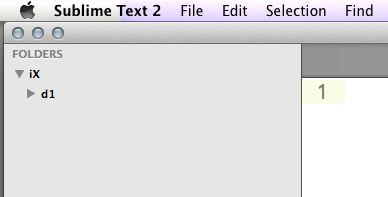
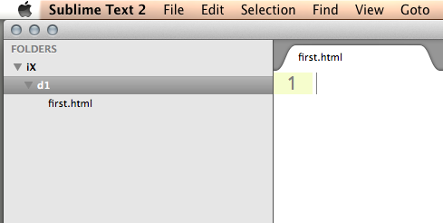

Exercises for 1A

E1: Gaining Familiarity
Learn the name, hometown, interests and some interesting facts about two of the people sitting near you.
E2: A Bit More Setup
We're going to build off of the prework to set up the working environment. All this material should be review, but if you have questions don't hesitate to ask.
On your Desktop, create a folder called iX. In your shell, switch to that directory with cd or dir and start a git repository. Lastly, create a folder called d1 (for day 1).
$ cd ~/Desktop
$ mkdir iX
$ cd iX
$ git init
Initialized empty Git repository in /Users/my_name/Desktop/iX/.git/
$ mkdir d1Windows users: While all the examples and screenshots are done on Macs, all the code should work (after slight modification) on your machine, especially if you have Cygwin or Git bash installed. If you don't and are stuck, please ask one of the TA's and they'll help you out!
Every day, you'll create a new folder for the classwork done during that day. Next, open the folder you've created in Sublime Text (File -> Open and then choose the folder on a Mac, File -> Open Folder... then choose the folder on Windows). Your Sublime should look exactly like below:

Right click on the d1 folder and choose "New File". Then save that file (File -> Save or Command-s on Mac or Ctrl-s on PC) as first.html. Now your screen should look like this:

In that file, type <p>hello world!</p>. Make sure to save again, and then open that folder in Google Chrome (right click on the file in the Sublime left sidebar and choose "Reveal in Finder". Then right click on the file in Finder and choose Open With -> Google Chrome). Now you should see a page in Chrome with hello world written on it—congratulations, you've made your first web page at iExperience!
E3: A Real Web Page
For this exercise, we're going to make a real web page, using the html, head and body tags you've already learned. Create a new file in the d1 folder called second.html and write the following (don't copy paste!):
<doctype html>
<html>
<head>
<title>My second webpage</title>
</head>
<body>
<p>hello world!</p>
</body>
</html>Open it in Chrome...do you see any difference betweeen this web page and the one you created in E2?
E4: Create a repo, commit and push!
We'll work together to create a repo on Github called iX. Then, just like in the prework, tell your repository about the new repo, commit your changes, and push! First, make sure you're in theiX directory.
$ git add .
$ git commit -m "Made first html files"
$ git remote add origin https://github.com/username/iX.git
$ git push origin master